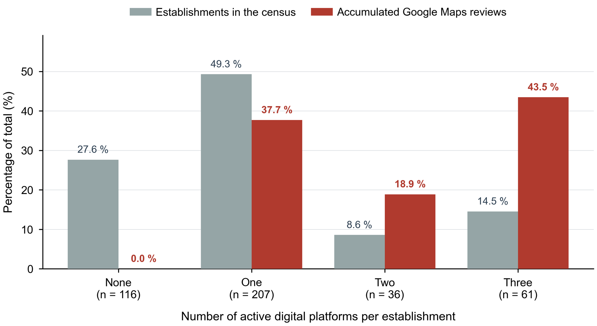
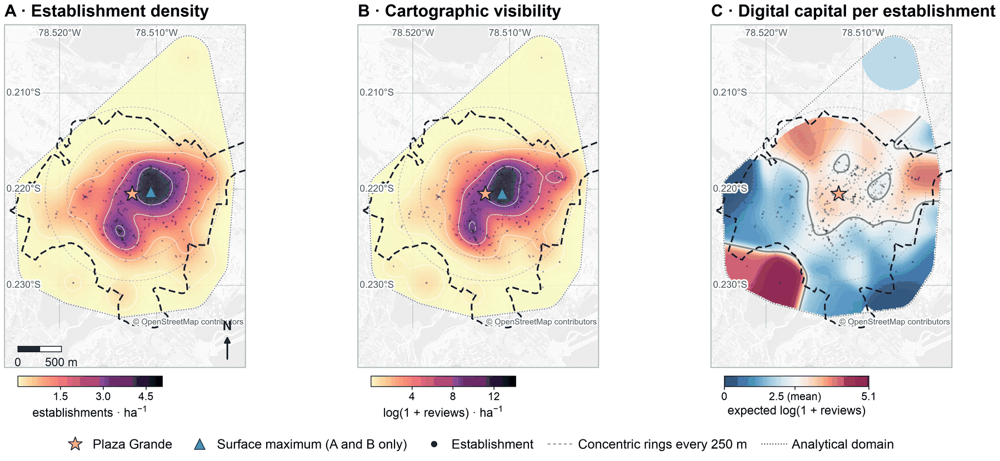
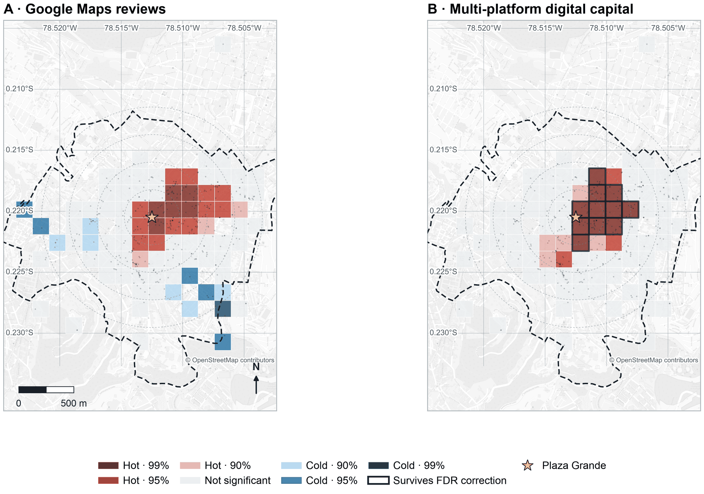

Findability before visibilityEncontrabilidad antes que visibilidad
Before a restaurant can be seen online, it has to be findable. We took the 420 food establishments in Quito's municipal tourism registry for the Historic Centre and checked which of them appear on Google Maps, Instagram and TikTok, and how much recognition each has gathered there.
Antes de poder verse en línea, un restaurante tiene que poder encontrarse. Tomamos los 420 establecimientos de comida del catastro turístico municipal del Centro Histórico de Quito y comprobamos cuáles aparecen en Google Maps, Instagram y TikTok, y cuánto reconocimiento ha reunido cada uno allí.
Companion to an article in Frontiers in Nutrition, under review.Material complementario de un artículo en Frontiers in Nutrition, en revisión.
What the census showsLo que muestra el censo
The design is cross-sectional, so these are associations, not causal effects.El diseño es transversal: son asociaciones, no efectos causales.
- 28 m
between the peak of physical density and the peak of digital visibility. The two surfaces correlate at ρ = 0.96, so online visibility is not displaced from where the food offer is.
separan el máximo de densidad física del máximo de visibilidad digital. Las dos superficies correlacionan en ρ = 0,96: la visibilidad en línea no está desplazada respecto de la oferta.
- 27.6%27,6 %
of the census is on none of the three platforms and has no reviews. This is an upper bound; online verification narrows it to between a fifth and a quarter.
del censo no está en ninguna de las tres plataformas y no tiene reseñas. Es una cota superior; la verificación en línea la acota a entre un quinto y un cuarto.
- 43.5%43,5 %
of all Google Maps reviews go to the 14.5% of establishments that are present on all three platforms.
de todas las reseñas de Google Maps corresponde al 14,5 % de establecimientos presentes en las tres plataformas.
- r = 0.898r = 0,898
between the composite digital index and the plain count of platforms. The main break is at entry, not in how much is gathered once inside.
entre el índice digital compuesto y el simple recuento de plataformas. La principal discontinuidad está en la entrada, no en lo acumulado una vez dentro.
- 85.2% / 19.0%85,2 / 19,0 %
have Instagram among restaurants serving new (reinterpreted) traditional cuisine and untranslated traditional cuisine, respectively.
tienen Instagram entre los restaurantes de nueva cocina tradicional (reinterpretada) y de cocina tradicional no traducida, respectivamente.
- 116
establishments without platforms were checked online in October 2026: 13 appear closed or relocated, 6 show signs of operating, and for 97 no evidence was found.
establecimientos sin plataformas se verificaron en línea en octubre de 2026: 13 aparecen cerrados o trasladados, 6 muestran señales de funcionamiento y de 97 no se encontró evidencia.
Absence from the platforms is not closure: a place may be open but offline, or present elsewhere (for example on Facebook).La ausencia en las plataformas no es cierre: un local puede estar abierto pero fuera de línea, o presente en otra parte (por ejemplo, en Facebook).
Figures from the articleFiguras del artículo
All figures are produced by the code in the repository.Todas las figuras salen del código del repositorio.






Data, code and citationDatos, código y citación
Everything is released under CC BY 4.0.Todo se publica bajo CC BY 4.0.
DataDatos
CodeCódigo
- Analysis pipelineFlujo de análisis (Python)
- Revision analysesAnálisis de la revisión (Python)
- Map generator, data collection and coding appGenerador del mapa, recolección y aplicación de codificación (Apps Script)
pip install -r requirements.txt
How to citeCómo citar
Please also cite the article (Jadán-Altamirano and Jadán-Guerrero, Frontiers in Nutrition, under review).Cite también el artículo (Jadán-Altamirano y Jadán-Guerrero, Frontiers in Nutrition, en revisión).